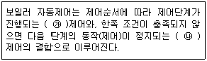
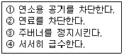
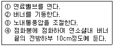

에너지관리기능사 (2009-03-29 기출문제)
1과목: 임의 구분
1. 온도 26℃의 물을 공급받아 엔탈피 665kcal/kg인 증기를 6,000kg/h 발생시키는 보일러의 상당증발량(kgf/h)은?
- 약 7,113
- 약 6,169
- 약 7,325
- 약 6,920
(정답률: 53%)

2. 각종 보일러에 대한 특징 설명으로 옳은 것은?
- 노통보일러는 내부 청소가 힘들고, 고장이 자주 생겨 수명이 짧다.
- 원통형 보일러는 본체구조가 간단한 형식으로 파열시 피해가 크다.
- 수관보일러는 전열면적이 작아 소용량 보일러에 적합하다.
- 코르니시 및 랭카셔 보일러의 노통은 2개 이상이다.
(정답률: 61%)
3. 10℃의 물 15kg을 100℃물로 가열하였을 때 물이 흡수한 열량은?
- 800cal
- 800kcal
- 1,200kcal
- 1,350kcal
(정답률: 67%)
4. 보일러의 자동제어 장치로 쓰이지 않는 것은?
- 화염검출기
- 안전밸브
- 수위검출기
- 압력조절기
(정답률: 67%)
5. 노통연관식 보일러의 특징 설명으로 틀린 것은?
- 열효율이 80~90%이다.
- 증기의 발생속도가 빠르다.
- 증기량에 비해 소형이며, 고성능이다.
- 제작과 취급이 어렵다.
(정답률: 48%)
6. 보일러 급수장치인 인젝터의 작동불량 원인이 아닌 것은?
- 증기압력이 높은 경우
- 흡입관로 및 밸브로부터 공기유입이 있는 경우
- 증기에 수분이 너무 많은 경우
- 급수온도가 너무 높은 경우
(정답률: 42%)
7. 보일러 화염 유무를 검출하는 스택스위치에 대한 설명으로 틀린 것은?
- 화염의 발열 현상을 이용한 것이다.
- 구조가 간단하다.
- 버너 용량이 큰 곳에 사용된다.
- 바이메탈의 신축작용으로 화염 유무를 검출한다.
(정답률: 71%)
8. 급수 자동제어에서 수위제어에 영향을 미치는 보일러 수위 제어시스템으로 제어할 수 없는 요소는?
- 급수온도
- 급수량
- 수위검출
- 증기량검출
(정답률: 60%)
9. 가정용 기름 보일러의 안전장치로 부착되지 않는 것은?
- 과열방지장치
- 저수위방지장치
- 압력제한기
- 화염감지장치
(정답률: 57%)
10. 증기압력이 높아질 때 감소되는 것은?
- 포화온도
- 증발잠열
- 포화수 엔탈피
- 포화증기 엔탈피
(정답률: 65%)
11. 육용 보일러 열정산의 조건과 관련된 설명 중 틀린 것은?
- 전기에너지는 1KW당 860kcal/h로 환산한다.
- 보일러 효율 산정방식은 입출열법과 열손실법으로 실시한다.
- 보일러 열정산은 원칙적으로 정격부하이하에서 정상상태로 3시간 이상의 운전결과에 따라 한다.
- 열정산 시험시의 연료 단위량은, 액체 및 고체연료의 경우 1kg에 대하여 열정산을 한다.
(정답률: 82%)
12. 보일러의 배기가스 성분을 측정하여 공기비를 계산하여 실제 건배기 가스량을 계산하는 공식으로 맞는 것은? (단, G : 실제 건배기가스량, Go : 이론 건배기가스량, Ao : 이론연소공기량, m : 공기비)
- G = m×Ao
- G = Go+(m–1)×Ao
- G = (m–1)×Ao
- G = Go+(m×Ao)
(정답률: 48%)
13. 가스연료의 보안설비에 대한 설명으로 틀린 것은?
- 방폭문은 연소실이나 연료에 필요에 따라 배관에 만들어 둔다.
- 화염탐지기는 이상 소화가 되었을 때, 즉시 연료를 차단시키기 위한 것이다.
- 가스연료는 폭발의 위험과 중독, 질식, 사망의 염려가 있으므로 보안설비를 한다.
- 환기장치는 공기보다 무거운 가스가 정체하여 폭발의 위험이 있는 곳에 높게 설치한다.
(정답률: 67%)
14. 구조가 간단하고, 자동화에 편리하며, 고속으로 회전하는 분무컵으로 연료를 비산·무화시키는 버너는?
- 건타입 버너
- 압력분무식 버너
- 기류식 버너
- 회전식 버너
(정답률: 77%)
15. 함진 배기가스를 액방울이나 액막에 충돌시켜 매진을 포집분리하는 집진장치는?
- 중력식 집진장치
- 관성분리식 집진장치
- 원심력식 집진장치
- 세정식 집진장치
(정답률: 80%)
16. LNG에 관한 설명으로 옳은 것은?
- 프로판가스를 기화(氣化)한 것이다.
- 부탄 및 에탄이 주성분인 천연가스이다.
- 수송 및 취급이 어렵고 독성이 있다.
- 공기보다 비중이 가볍다.
(정답률: 56%)
17. 보일러 종류 중 열효율이 80~90%로 높으며, 사용연료는 시용시 경유, 운전 중에는 중유가 사용되는 난방용으로 병원, 공장 등에 널리 사용되는 보일러는?
- 열매체식 보일러
- 소형관류식 보일러
- 노통연관식 보일러
- 자연순환식 보일러
(정답률: 32%)
18. 보일러 자동제어에 대한 다음 설명에서 ( )에 들어갈 용어로 옳은 것은?

- ㉮ 피드백(feed back) ㉯ 시퀀스(sequence)
- ㉮ 피드백(feed back) ㉯ 인터록(interlock)
- ㉮ 인터록(interlock) ㉯ 시퀀스(sequence)
- ㉮ 시퀀스(sequence) ㉯ 인터록(interlock)
(정답률: 85%)
19. 전송기에서 신호전달거리를 가장 멀리 할 수 있는 방식은?
- 공기압식
- 팽창식
- 유압식
- 전기식
(정답률: 86%)
20. 방열기 출구에 설치하는 것으로 에테르 등의 휘발성 액체를 넣은 벨로즈를 부착하고, 열에 의한 이 벨로즈의 팽창, 수축작용 등을 이용하여 밸브를 개폐시키는 트랩은?
- 박스 트랩
- 벨 트랩
- 다량 트랩
- 열동식 트랩
(정답률: 79%)
2과목: 임의 구분
21. 압력계를 보호하기 위하여 다음 중 어느 관 속에 물을 투입하여 고온증기가 부르동관에 영향을 미치지 않도록 하는가?
- 사이폰관
- 압력관
- 바이패스관
- 밸런스관
(정답률: 75%)
22. 어떤 보일러의 매시 연료사용량이 150kgf/h이고, 연소실체적이 30㎥일 때, 연소실 열발생율은 몇 kcal/㎥·h인가?(단, 연료의 저위발열량은 9,800kcal/kg이고, 공기 및 연료의 현열은 무시한다.)
- 50
- 327
- 1,960
- 49,000
(정답률: 43%)
23. 보일러의 용량은 정격부하의 상태에서 무엇으로 표시하는가?
- 보일러마력
- 전열면적
- 온수온도
- 매시간 마다 증발량
(정답률: 50%)
24. 1보일러 마력을 시간당 발생 열량으로 환산하면?
- 15.65kcal/h
- 8,435kcal/h
- 9,290kcal/h
- 7,500kcal/h
(정답률: 65%)
25. 보일러의 연소로벽 등에 부착하는 타고 남은 찌꺼기를 제거하는데 적합하며 특히, 미분탄 연소 보일러 및 폐열보일러 같은 타고 남은 연재가 많이 부착하는 보일러에 사용하는 수트블로워는?
- 건타입
- 로터리형
- 정치회전형
- 롱리트랙터블타입
(정답률: 37%)
26. 보일러 배기가스의 자연 통풍력을 증가시키는 방법으로 틀린 것은?
- 배기가스 온도를 낮춘다.
- 연돌 높이를 증가시킨다.
- 연돌을 보온 처리한다.
- 연돌의 단면적을 크게 한다.
(정답률: 68%)
27. 다음 중 공기예열기의 종류에 속하지 않는 것은?
- 전열식
- 재생식
- 증기식
- 방사식
(정답률: 64%)
28. 슈트 블로워의 기능 설명으로 옳은 것은?
- 보일러 동 내면의 슬러지를 배출시킨다.
- 보일러 수면상의 부유물을 배출시킨다.
- 보일러 전열면의 그을음을 불어낸다.
- 보일러 급수를 원활하게 해준다.
(정답률: 76%)
29. 연소의 3대 조건이 아닌 것은?
- 발화점
- 가연성물질
- 산소 공급원
- 점화원
(정답률: 67%)
30. 보일러의 이상 저수위시, 과열 등이 발생할 때 비상조치 단계로 옳은 것은?

- ②→①→③→④
- ①→②→③→④
- ①→②→④→③
- ②→①→④→③
(정답률: 78%)
31. 연소효율을 구하는 식으로 맞는 것은?
- (공급열/실제연소열)×100
- (실제연소열/공급열)×100
- (유효열/실제연소열)×100
- (실제연소열/유효열)×100
(정답률: 64%)
32. 진공환수식 증기 난방법에 쓰이는 진공 개폐기는 환수관내의 진공도를 몇 ㎜Hg정도로 유지시키는가?
- 50~100
- 100~250
- 250~400
- 400~550
(정답률: 66%)
33. 액상식 열매체 보일러의 방출밸브 지름은 몇 ㎜ 이상으로 하여야 하는가?
- 10
- 20
- 30
- 40
(정답률: 70%)
34. 보일러 과열, 소손의 방지책이 아닌 것은?
- 보일러 수위를 저하 시키지 않는다.
- 보일러수(水)를 과도하게 농축시키지 않는다.
- 전열면에 부착된 유지분을 제거시키지 않는다.
- 연소실 열부하를 크게 하지 않는다.
(정답률: 83%)
35. 보일러수면에서 증발이 격심하여 기포가 비산해서 수적이 증기부에 심하게 튀어오르는 현상은?
- 포밍
- 캐리오버
- 프라이밍
- 수격작용
(정답률: 42%)
36. 다음 보기를 보고 기름보일러의 수동조작 점화요령 순서로 가장 적합한 것은?

- ③-④-②-①
- ①-②-③-④
- ②-①-④-③
- ④-②-③-①
(정답률: 51%)
37. 증기난방과 비교한 온수난방의 특징 설명으로 틀린 것은?
- 실내의 쾌적도가 좋다.
- 보일러의 취급이 쉽고 안전하다.
- 난방부하의 변동에 대한 온도조절이 쉽다.
- 예열 및 냉각 시간이 짧다.
(정답률: 77%)
38. 증기난방에 관한 설명으로 틀린 것은?
- 원심펌프로 응축수를 보일러에 강제 환수시키는 방식이 진공환수식이다.
- 증기공급방향에 따라 상향공급식과 하향공급식이 있다.
- 저압식 증기압력의 범위는 0.15~0.35kgf/㎠이다.
- 건수환수방식은 생증기의 유출방지를 위하여 증기트랩을 장치하여야 한다.
(정답률: 51%)
39. 보일러를 가동하기 전 운전자가 준비 및 점검사항으로 틀린 것은?
- 보일러 운전자는 수면계를 확인 하여 보일러 수위가 정상인지 점검할 것.
- 보일러 운전자는 최고사용압력을 초과 상승하지 않도록 확인 점검할 것.
- 보일러 운전자는 급수탱크에 저장 용수가 정상인가 확인 점검할 것.
- 보일러 운전자는 연료계통의 상태가 정상인지 확인 점검할 것.
(정답률: 66%)
40. 보온재가 갖추어야 할 조건으로 틀린 것은?
- 비중이 작을 것
- 열전도율이 클 것
- 기계적 강도가 클 것
- 흡습성이 적고 가공이 용이할 것
(정답률: 78%)
3과목: 임의 구분
41. 유류보일러의 수동조작 점화방법 설명으로 틀린 것은?
- 연소실내의 통풍압을 조절한다.
- 점화봉에 불을 붙여 연소실내 버너 끝의 전방하부 1m정도에 둔다.
- 증기분사식은 응축수를 배출한다.
- 버너의 기동스위치를 넣거나 분무용 증기 또는 공기를 분사시킨다.
(정답률: 56%)
42. 지구온난화현상과 관련하여 온실효과를 가져오는 대표적인 기체는?
- CO2
- O2
- SO3
- N2
(정답률: 83%)
43. 복사난방의 바닥패널 코일방식에 대한 설명으로 틀린 것은?
- 덕트방식은 구조체를 2중으로 하여 그 사이에 온풍을 통과시켜 난방을 행하는 방식이다.
- 그리드식은 균등한 유량분배로 각 코일의 온도가 거의 같도록 할 수 있다.
- 밴드코일은 관로의 저항이 많아 길이가 길어질 경우 전 · 후방부의 온도차가 많이 난다.
- 달팽이형 코일은 패널의 중앙부가 달팽이 모양이며 최근에는 사용하지 않는다.
(정답률: 48%)
44. 보일러의 계속사용검사기준 중 개방검사 준비에 대한 설명으로 틀린 것은?
- 연료로 기름을 사용하는 곳에서는 무화장치들을 버너로부터 제거한다.
- 보일러에 대한 손상을 방지하고 가열면에 고착물이 굳어져 달라붙지 않도록 충분히 냉각시켜야 한다.
- 검사를 위한 내부 조명은 축전지로부터 전류가 공급되는 이동램프를 사용하여야 한다.
- 저수위 감지장치는 분해 정비하되, 안전밸브 및 안전방출밸브는 분해하지 않는다.
(정답률: 45%)
45. 온수발생 보일러의 전열면적이 10㎡ 미만일 때 방출관의 안지름의 크기는?
- 15㎜ 이상
- 20㎜ 이상
- 25㎜ 이상
- 32㎜ 이상
(정답률: 24%)
46. 보일러 운전방법에 따르는 이상증발 원인이 아닌 것은?
- 보일러수가 농축된 경우
- 보일러수의 순환이 불량한 경우
- 증기부하가 과대한 경우
- 송기시에 증기밸브를 급개한 경우
(정답률: 21%)
47. 온수난방에서 난방부하가 6,000kcal/h이고, 방열기 쪽당 방열면적이 0.5㎡ 일 때 방열기의 적절한 쪽수는?(단, 5세주형 방열기이다.)
- 6
- 12
- 21
- 27
(정답률: 52%)
48. 보일러의 안전관리 항목으로 다음 중 가장 중요한 것은?
- 연도의 저온부식 방지
- 연료의 예열
- 2차 공기의 조절
- 안전저수위 이하 감수의 방지
(정답률: 84%)
49. 온수보일러의 방열기 입구온도가 80℃, 출구온도가 40℃이고, 온수 순환량이 500kgf/h일 때, 방열기방열량은 몇 kcal/h인가? (단, 온수의 평균비열은 1kcal/kgf·℃로 한다.)
- 30,000
- 20,000
- 25,000
- 15,000
(정답률: 61%)
50. 보일러에 사용되는 안전밸브 및 압력방출장치 크기를 20A 이상으로 할 수 있는 보일러가 아닌 것은?
- 소용량 강철제 보일러
- 최대증발량 5T/h 이하의 관류보일러
- 최고사용압력 1MPa(10kgf/c㎡)이하의 보일러로 전열면적 5㎡ 이하의 것
- 최고사용압력 0.1MPa(1kgf/c㎡)이하의 보일러
(정답률: 51%)
51. 보일러 스케일 생성의 방지대책으로 가장 잘못된 것은?
- 급수 중의 염류, 불순물을 되도록 제거한다.
- 보일러 동 내부에 페인트를 두껍게 바른다.
- 보일러 수의 농축을 방지하기 위하여 적절히 분출시킨다.
- 보일러 수에 약품을 넣어서 스케일 성분이 고착하지 않도록 한다.
(정답률: 84%)
52. 점화가 이루어져 가동 중인 보일러는 상용수위의 유지가 중요하며 어떤 경우라도 ( )이하로 내려가지 않도록 한다. 괄호 안에 적합한 용어는?
- 표준수위
- 정상수위
- 상용수위
- 안전저수위
(정답률: 78%)
53. 보일러 내부에 스케일이 형성된 경우 나타나는 현상이 아닌 것은?
- 전열량 감소
- 연료 소비량 증대
- 관수 순환 촉진
- 전열면 국부과열
(정답률: 70%)
54. 복사난방의 장점이 아닌 것은?
- 높이에 따른 온도분포가 균일하다.
- 실내 공간의 이용율이 높다.
- 예열이 짧아 부하에 대응하기 쉽다.
- 공기 등의 미진을 태우지 않아 쾌감도가 좋다.
(정답률: 61%)
55. 에너지기본법에서 정한 지역에너지계획을 수립하여야 하는 자는?
- 에너지관리공단이사장
- 지식경제부장관
- 행정자치부장관
- 특별시장, 광역시장 또는 도지사
(정답률: 61%)
56. 열사용기자재 관리규칙에서 정한 검사대상기기에 해당되는 열사용기자재는?
- 최고사용압력이 0.08MPa이고, 전열면적 4㎡인 강철제 보일러
- 흡수식 냉온수기
- 가스사용량이 20kg/h인 가스사용 소형온수보일러 (단, 도시가스가 아닌 가스임)
- 정격용량이 0.4MW인 철금속가열로
(정답률: 45%)
57. 에너지 다소비업자에 대하여 에너지관리지도 결과 에너지손실 요인이 많은 경우 지식경제부장관은 어떤 조치를 할 수 있는가?
- 벌금을 부과할 수 있다.
- 에너지 손실 요인의 개선을 명할 수 있다.
- 에너지 손실 요인에 대한 배상을 요청할 수 있다.
- 에너지 사용정지를 명할 수 있다.
(정답률: 64%)
58. 에너지기본법에서 규정하는 온실가스가 아닌 것은?
- 육불화황(SF6)
- 과불화탄소(PFCS)
- 수소불화탄소(HFCS)
- 산소(O2)
(정답률: 77%)
59. 에너지이용합리화법에서 정한 검사에 합격되지 아니한 검사대상기기를 사용한자에 대한 벌칙은?
- 1년 이하의 징역 또는 1천 만원 이하의 벌금
- 2년 이하의 징역 또는 2천 만원 이하의 벌금
- 1천 만원 이하의 벌금
- 5백 만원 이하의 벌금
(정답률: 73%)
60. 에너지기본법에서 정한 에너지기술개발 사업비로 사용될 수 없는 사항은?
- 에너지에 관한 연구인력 양성
- 온실가스 배출을 줄이기 위한 시설투자
- 에너지사용에 따른 대기오염 저감을 위한 기술개발
- 에너지기술개발 성과의 보급 및 홍보
(정답률: 32%)
증기의 엔탈피가 665kcal/kg이므로, 물이 증발하여 증기가 되는 과정에서 물의 엔탈피가 665-26.2=638.8kcal/kg만큼 증가합니다.
따라서, 상당증발량은 다음과 같이 계산할 수 있습니다.
상당증발량 = (6,000kg/h) x (1kg/3600s) x (638.8kcal/kg) = 약 7,113kg/h
따라서, 정답은 "약 7,113"입니다.